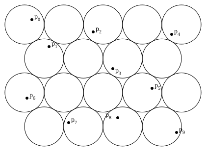
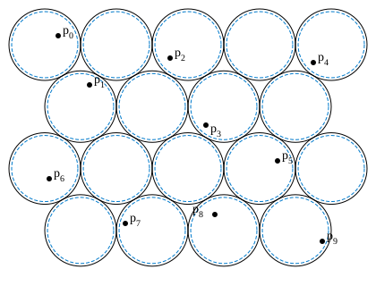
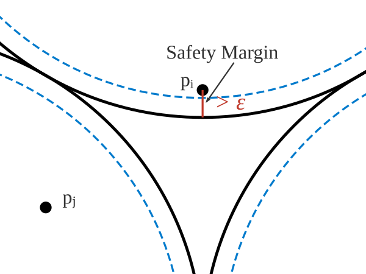

Introduction
Not long ago, I stumbled upon an interesting piece by SackVideo: "If it probably exists, then it does", demonstrating an existence proof from geometry: that any ten points in a plane, $p:~\{0, \ldots, 9\} \to \mathbb{R}^2$, can be covered by a grid of non-overlapping unit disks. The argument presented originally by Naoki Inaba was an application of the probabilistic method, proving that a solution must exist without offering any means to find it. It was, in the formal sense, non-constructive.
Upon reflection, I realised that the proof harboured something deeper. With a minor, almost trivial, alteration, the very logic that guarantees existence could be transformed into a concrete method for actually constructing such a covering. This insight -- that a non-constructive proof can so readily yield a constructive one -- is the subject of this post. We shall see how a slender margin of probability becomes the key to finding what we were only told must exist.
A Proof Through Probability

The strategy, as explained in the video on the subject, does not seek to build a solution but rather to prove that a solution is, in a sense, unavoidable. It asks not "Where should we place the disks?" but "What are the chances that a random placement succeeds?"
To formalise this notion of a random placement, let us adopt a more constructive narrative. We begin with a single, fundamental building block of the hexagonal pattern: an equilateral triangle, $T$, with side length $2R$. The random element of our procedure is to select a point, $\mathbf{w}$, chosen uniformly at random from the interior of this triangle. This point $\mathbf{w}$ then serves as the centre of a "seed disk". From this seed, the entire, infinite hexagonal grid of disks, which we shall denote $G_\mathbf{w}$, is constructed deterministically, extending perfectly in all directions.
With the grid's position now tied to this random choice, we can consider the probability that any one of our fixed points, $p_i$, is covered. This probability is simply the known packing density of the hexagonal lattice—the proportion of the plane occupied by the disks. We shall denote this value by $\rho$:
$$\begin{equation*} \rho = \frac{\text{Area}(\text{Disk})}{\text{Area}(\text{Fundamental Domain})} = \frac{\pi R^2}{2R^2\sqrt{3}} = \frac{\pi}{2\sqrt{3}} = \frac{\pi \sqrt{3}}{6} \approx 0.9069 \end{equation*}$$Let $N$ be the random variable for the number of covered points. We can express $N$ as a sum of indicator functions: $N = \sum_{i \in [10]} \mathbb{I}\{p_i \in G_\mathbf{w}\}$, where $\mathbb{I}\{\cdot\}$ is 1 if the condition is true, and 0 otherwise.
By the linearity of expectation, the expected number of covered points is:
$$\begin{equation*} \mathbb{E}[N] = \mathbb{E}\left[\sum_{i \in [10]} \mathbb{I}\{p_i \in G_\mathbf{w}\}\right] = \sum_{i \in [10]} \mathbb{E}[\mathbb{I}\{p_i \in G_\mathbf{w}\}] \end{equation*}$$The expectation of an indicator function is the probability of the event it indicates, therefore:
$$\begin{equation*} \sum_{i \in [10]} \mathbb{E}[\mathbb{I}\{p_i \in G_\mathbf{w}\}] = \sum_{i \in [10]} P(p_i \in G_\mathbf{w}) = 10 \rho \approx 9.069 \end{equation*}$$Here lies the crux of the matter. The average number of points covered is strictly greater than 9. If the average outcome is 9.069, it is a logical necessity that at least one outcome must be greater than or equal to this average. Since the number of points covered must be an integer, there must exist at least one specific placement of the grid for which 10 points are covered. And so, existence is proven.
A Constructive Approach: The Derandomization

The probabilistic argument is logically sound and deeply satisfying. Yet, as established, it is incomplete from a constructive standpoint. Happily, the very structure of this proof contains the seeds of its own transformation into a constructive algorithm. The key is the strict inequality: the fact that the expected value is not merely 9, but strictly greater than 9. This slender margin is our "wiggle room," and it is all we need.
The Margin of Safety: Shrinking the Disks

Let us revisit the argument, but with a slight modification. Suppose we shrink the radius of every disk in our grid by a minuscule amount, $\varepsilon > 0$. The new radius is $R-\varepsilon$. The probability of covering a single point is now slightly smaller, scaled by the ratio of the new disk's area to the old:
$$\begin{equation*} p_\varepsilon = \rho \frac{\pi(R-\varepsilon)^2}{\pi R^2} = \rho \left(1 - \frac{\varepsilon}{R}\right)^2 \end{equation*}$$The new expected number of covered points is $10 p_\varepsilon$. For the argument to hold, this must still be strictly greater than 9. We must show that a positive $\varepsilon$ exists that satisfies:
$$\begin{equation*} 10 \rho \left(1 - \frac{\varepsilon}{R}\right)^2 > 9 \end{equation*}$$Solving for $\varepsilon$:
$$\begin{equation*} \left(1 - \frac{\varepsilon}{R}\right)^2 > \frac{9}{10 \rho} \implies 1 - \frac{\varepsilon}{R} > \sqrt{\frac{9}{10 \rho}} \end{equation*}$$$$\begin{equation*} \frac{\varepsilon}{R} < 1 - \sqrt{\frac{9}{10 \rho}} \implies \varepsilon < R \left(1 - \sqrt{\frac{9}{10 \rho}}\right) \end{equation*}$$Since $10 \rho \approx 9.069 > 9$, the term $\frac{9}{10 \rho}$ is strictly less than 1. This guarantees that the upper bound for $\varepsilon$ is a positive real number. Thus, for any sufficiently small $\varepsilon$, there must exist a grid placement that covers all ten points even with these slightly smaller disks.
The Ball of Solutions
This is a profoundly important step. A grid placement is uniquely defined by a translation vector $v \in T$. Let $v_0$ be a vector defining a placement that covers all points with disks of radius $R-\varepsilon$. This implies that for each point $p_i$, we can identify a corresponding center $c_i \in C$ from the reference grid such that:
$$\begin{equation*} \|p_i - (c_i + v_0)\| \le R - \varepsilon \end{equation*}$$This inequality signifies a safety margin. Each point is at least a distance of $\varepsilon$ from the boundary of its corresponding disk of the original size, $R$.
Now, imagine we perturb this grid slightly, shifting it by a vector $\delta$ where the magnitude $\|\delta\| < \varepsilon$. Let the new placement be $v' = v_0 + \delta$. By the triangle inequality:
$$\begin{equation*} \|p_i - (c_i + v')\| = \|(p_i - (c_i + v_0)) - \delta\| \le \|p_i - (c_i + v_0)\| + \|\delta\| \end{equation*}$$Substituting our known bounds:
$$\begin{equation*} \|p_i - (c_i + v')\| < (R - \varepsilon) + \varepsilon = R \end{equation*}$$This proves that any placement vector $v'$ within the open ball of radius $\varepsilon$ centered at $v_0$ is also a valid solution. The set of all solutions, $\mathcal{S}$, therefore contains a continuous, open ball of solutions, $B(v_0, \varepsilon) \subset \mathcal{S}$.
The Finite Search: From Infinity to a Grid

The knowledge that a solution must exist within a ball of a known, calculable radius $\varepsilon$ transforms the problem entirely. We no longer face a search across an infinite continuum. The space of all unique placements, the compact fundamental domain $T$, can now be searched exhaustively.
Our constructive algorithm is now clear:
1. Calculate the required precision, $\varepsilon = R \left(1 - \sqrt{9/(10\rho)}\right)$.
2. Construct a finite set of test points $v : [N] \to T, N \in \mathbb{N}$, which forms an $\varepsilon$-net of $T$:
$$\begin{equation*} \forall t \in T \to \exists k \in [N] \wedge \| t - v_k \| < \varepsilon. \end{equation*}$$3. For each $v_k \in V_{test}$, deterministically check if the grid defined by $v_k$ covers all ten points.
Since we have proven that a solution ball $B(v_0, \varepsilon)$ must exist somewhere in $T$, it is a certainty that at least one of our test points, $v_k$, will lie inside it. The algorithm is therefore guaranteed to find a solution in a finite number of steps.
Discussion
This simple instance illustrates well a more general principle. The "wiggle room" afforded by strict inequalities in probabilistic arguments is often the key to their derandomization. What begins as an elegant proof of existence becomes a blueprint for a concrete method of discovery.
From the perspective of formal logic and constructive mathematics (as one might practise in systems like Agda), this process has a deep significance. One can first prove that checking for a solution within our finite $\varepsilon$-net is a decidable problem. Then, one can use the classical, non-constructive proof as a lemma which shows that the "no solution found" branch of our algorithm is impossible. By the principle of ex falso quodlibet (from a contradiction, anything follows), this logical absurdity allows a constructive system to formally accept that the algorithm must terminate in the "solution found" branch. The non-constructive argument, therefore, acts as a certificate that our deterministic search will not fail.
References
- original video:
- https://2012.cccg.ca/papers/paper13.pdf
- https://www.cut-the-knot.org/Probability/ProbabilisticMethod.shtml
- https://theory.stanford.edu/~jvondrak/MATH233-2016/Math233-lec02.pdf
- Probabilistic Method, Noga Alon, Joel H. Spencer